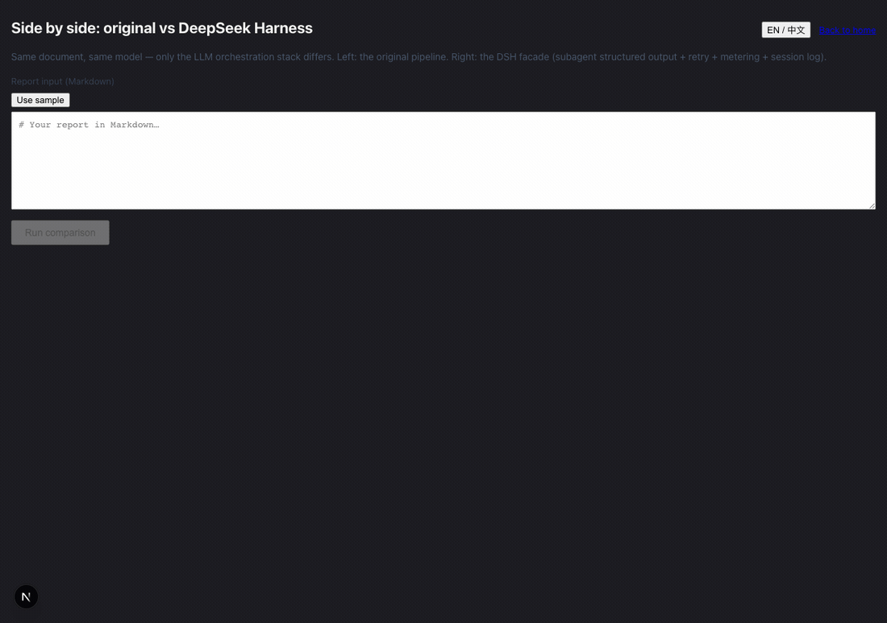
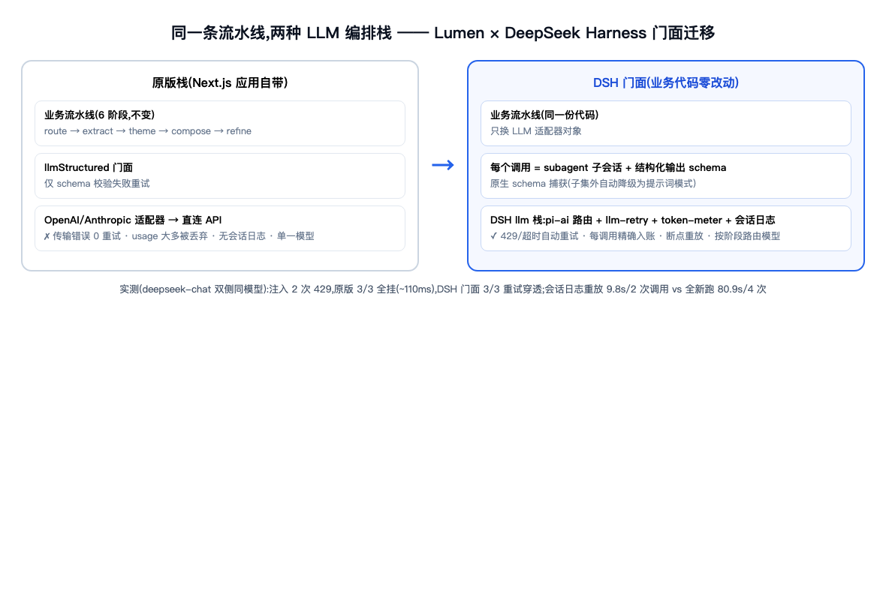
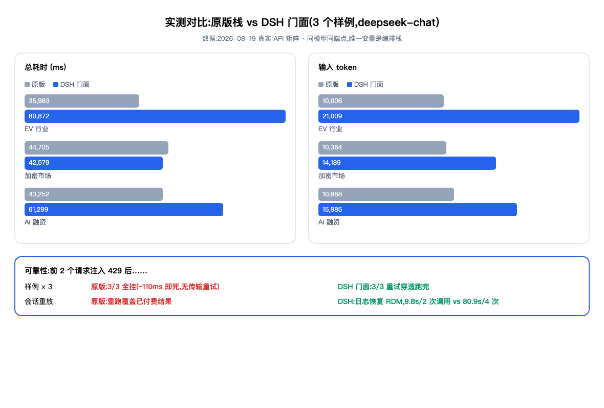

在线体验:并排实时对比
同一份报告,左原版栈右 DSH 门面,云端实时双跑,两侧仪表盘并排渲染。
打开 Compare Lab →安装(两条命令)
codex plugin marketplace add https://github.com/coffee-man666/deepseek-harness --sparse .agents/plugins --sparse plugins/dsh-skillscodex plugin add dsh-skills@deepseek-harness需要支持插件机制的 Codex 版本。源码与文档:plugins/dsh-skills。
三套技能
repo-recon
只读侦察本地 Git 项目:并行子代理扫读、两阶段(广度扫描 + 深潜),产出带 file:line 证据的工作流地图与痛点清单。宿主无关,无子代理环境自动降级。
dsh-enhancement-analysis
把项目痛点映射到 DeepSeek Harness 原语(事件瀑布 / 会话即日志 / subagent 委托 / 执行世界替换),产出诚实分级的迁移路线图:✅ 等价 / ✅✅ 更强 / ⚠️ 硬移植,成本明示,不吹不黑。
harness-runtime-optimizer
把 agent 运行时当策略层做实验:可观测性地图 → 浪费诊断 → 策略干预 → 前后指标对照,ADOPT / REJECT / SEGMENT 三态裁决,禁止无数据宣布优化成功。
试一试:让技能分析你的代码库
输入仓库地址或本地路径,生成一段可直接粘贴给 Codex 的分析指令(装好插件后即可运行;分析在你的 agent 会话里执行,repo-recon 只读不改)。
并排实时演示
同一份报告,左原版栈、右 DSH 门面,实时双跑并渲染两个仪表盘(真实 API 录制,12 秒速览全程):

实测效果(以 Lumen 报告流水线为样本)


0/3 vs 3/3注入 2 次 429:原版三次全挂,DSH 门面三次重试穿透
9.8s vs 80.9s会话日志重放:跳过已付费的 extract,4 次 LLM 调用变 2 次
每调用自动入账token / 延迟 / 重试链全部来自会话日志,无需埋点
完整对比(可视化页面 + 原始数据 + 一键复现)见 vibe-report-dashboard 的 dsh/ 目录(含分析报告与全部矩阵数据);同仓库还有并排实时对比页(左原版右 DSH)。